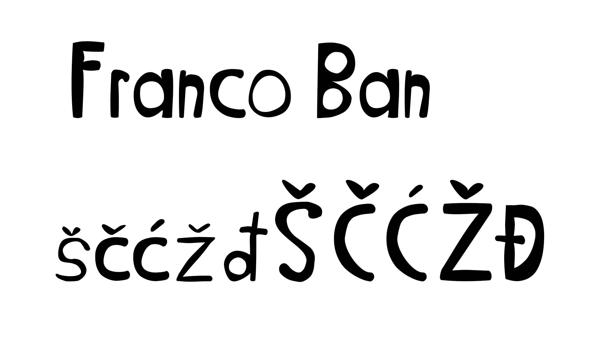
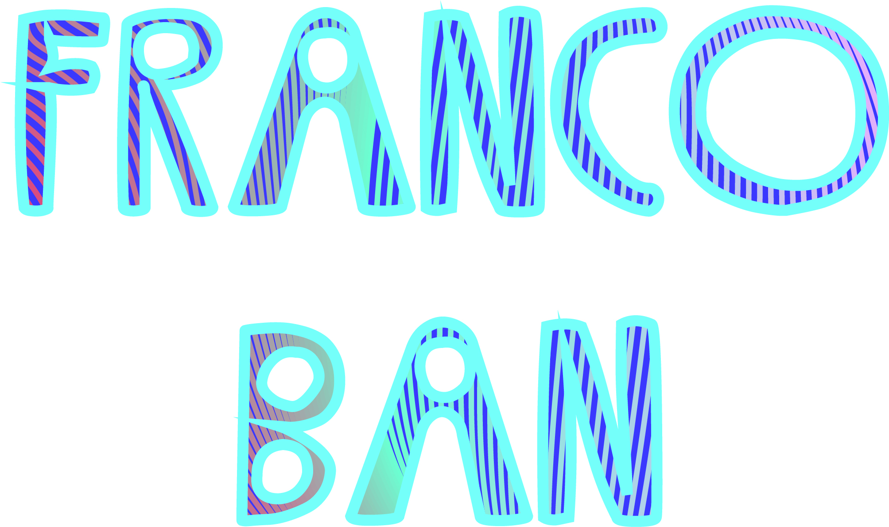
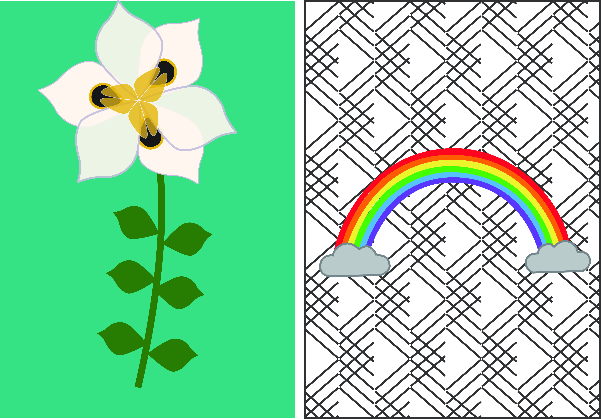
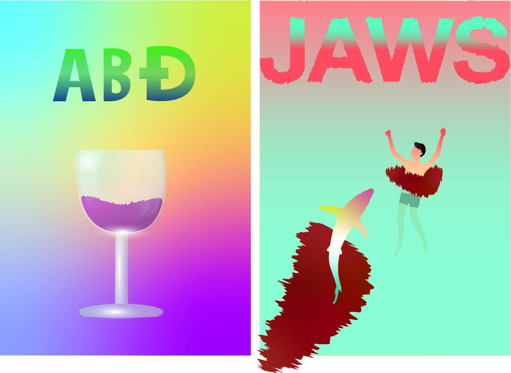
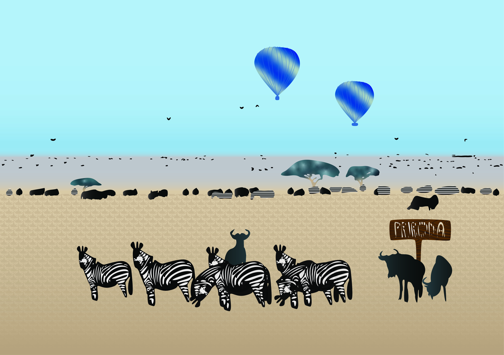
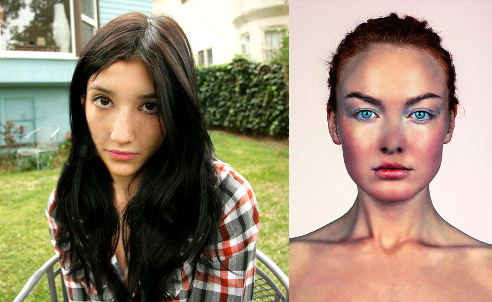
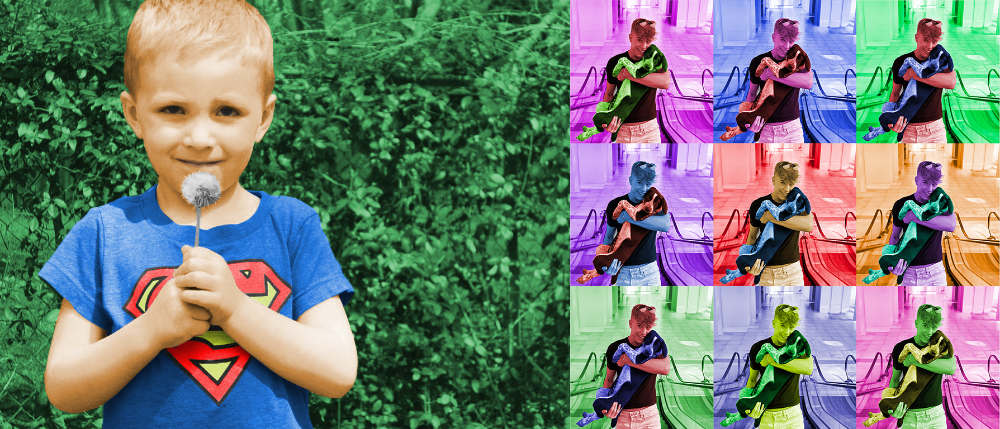
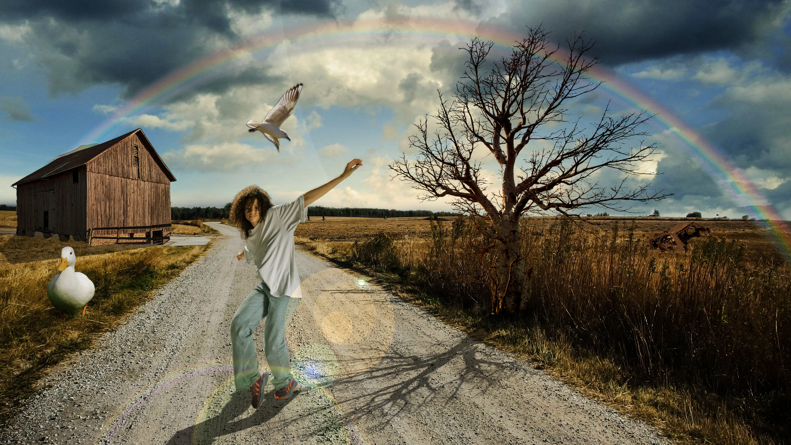
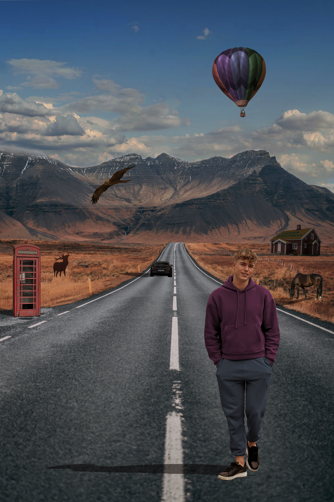
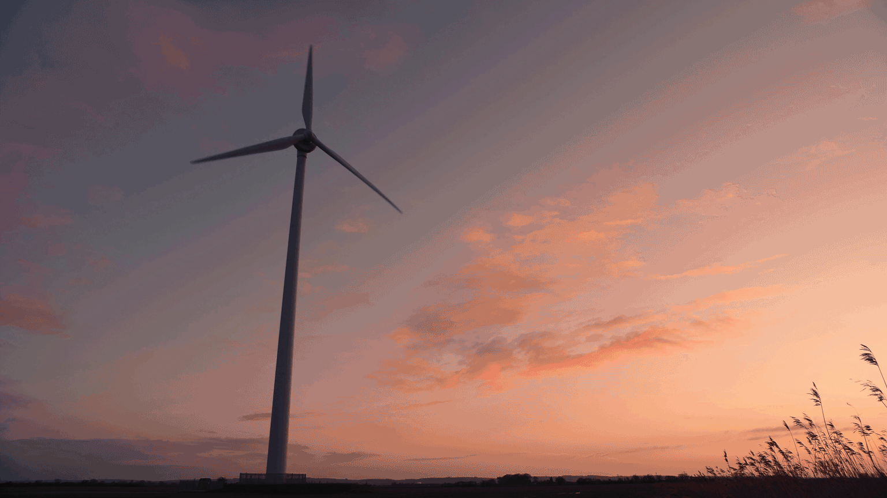

Izrada fonta

Kreiranje vlastitog fonta korištenjem vektorskih alata.

Kreiranje vlastitog fonta korištenjem vektorskih alata.

Vježbanje preciznog crtanja krivulja pomoću Bezierovih točaka.

Primjena transformacija objekata i rad s gradijentima boja.

Korištenje transparencija i boja za oblikovanje složenih kompozicija.

Završna vježba iz Adobe Illustrator-a s obuhvatom naučenih tehnika.

Uklanjanje nesavršenosti i obnova starih fotografija.

Dodavanje ili promjena boja na crno-bijelim fotografijama.

Kombiniranje više slika u jednu kompoziciju.

Praktična provjera znanja rada u Photoshopu.

Kreiranje pokretnih fotografija u kojima je animiran samo jedan element.
Uređivanje i montaža video materijala u Adobe Premiere Pro.
Izrada i objava vlastite web stranice koristeći HTML i GitHub Pages.